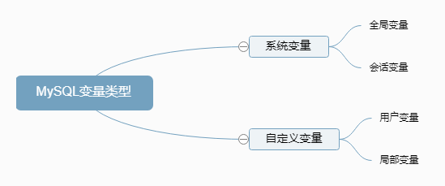
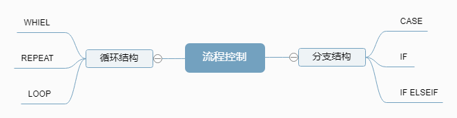

存储过程是一组SQL的集合，类似于Java中的方法，将一组完成特定功能的SQL和逻辑语句封装起来，对外只暴露一个名字，通过调用存储过程可以实现封装好的功能
函数和存储过程相似，也是一组SQL和逻辑语句的封装，和存储过程不同的是，函数必须且仅有一个返回值，而存储过程的返回值有无和返回值个数都是可选的。
上面说存储过程和函数类似Java中的方法，既然类似方法，那么方法中一定会有变量，我们先补充一下MySQL中变量的知识
变量的种类

系统变量
系统变量是不需要定义的，我们只能使用或修改它们的值。全局变量的作用域是服务层面的，即对所有的连接生效，但重启服务器会使修改后的全局变量变回默认值，我们可以通过修改配置文件来做到永久修改全局变量的值。而会话变量自然就是针对一次会话或者说一个连接生效的。
#查看系统变量
#括号内容可选，不写的话默认是查看会话变量(session)
show [global|session] variables
#查看指定系统变量的值
#括号内容不写默认是session
select @@[global|session].[变量名]
#赋值
set [global|session].[变量名] = '值'
set @@global.[变量名] ='值'
set @@session.[变量名] ='值'
自定义变量
用户变量的作用域是整个会话(连接)，可以给它理解成是咱自己定义的会话变量，而局部变量顾名思义只能局部使用，它的作用域是存储过程或者函数内。
#声明并赋值
set @变量名=值;
set @变量名:=值;
select @变量名:=值;
#修改用户变量的值
#==========跟定义时候一样START========
set @变量名=值;
set @变量名:=值;
#注意使用这种方式赋值一定要加上冒号，单独的等号会被认为是比较符号
select @变量名:=值;
#===========跟定义时候一样END=========
select [字段名] into @变量名 from 表名;
#使用
select @变量名;
#声明
declare 变量名 变量类型 default [默认值] ;
#赋值或更新
set 变量名=值;
set 变量名:=值;
select 变量名:=值;
select xx into 变量名 from 表;
#使用
select 变量名;
create procedure 存储过程名(参数模式 参数名 参数类型)
#存储过程体中可以有多条sql语句，如果仅仅一条sql语句，则可以省略begin end
begin
存储过程体 #注意：存储过程中的每一个SQL都需要用分号结尾
end
call 存储过程名(实参列表)
参数模式有三种，用来标记这个参数的功能
create procedure 存储过程名(in userName varchar(20))
begin
#在方法体中可以直接使用userName,就跟正常的列名一样使用
end
set @usetName="传入的值";
call 存储过程名(@usetName);
create procedure 存储过程名(out userName varchar(20))
begin
#在方法体中给userName赋值，调用的时候传进一个变量，调用完成后这个变量就会被赋值
select xx into userName from 表名
end
#用来接收参数
set @usetName="";
call 存储过程名(@usetName);
#输出接收的值
select @usetName
create procedure 存储过程名(inout userName varchar(20))
begin
#inout 既可以传入参数，又可以输出
select xx into userName from 表名
end
set @usetName="传入的值";
call 存储过程名(@usetName);
#输出接受的值
select @usetName
create function 函数名(参数名 参数类型,...) returns 返回类型
begin
#注意，函数体中一定要有return语句
函数体
end
SELECT 函数名（实参列表）
drop procedure 存储过程名;
drop function 函数名；
函数和存储过程乍一看差不多，但函数要求有且仅有一个返回值，所以函数多数用来做对数据复杂处理，最后返回一个结果，而存储过程多用来批量插入或者更新数据
| 关键字 | 调用语法 | 返回值 | |
|---|---|---|---|
| 函数 | FUNCTION | SELECT 函数() | 只能是一个 |
| 存储过程 | PROCEDURE | CALL 存储过程() | 可以有0个或多个 |
存储过程或函数中的SQL需要搭配流程控制语句才可以实现各种复杂功能，下面介绍MySQL中的流程控制语句

IF函数：实现简单双分支
#条件为真输出值1，否则输出值2，相当于Java中的三元运算符
if(条件，值1，值2)
CASE结构：可以作为表达式放在任何位置，实现多分支
#作为表达式结合着其他语句使用
select *
from
case 表达式或字段
when 值1 then 语句1(在这里就是表的名字了)
when 值2 then 语句2
..
else 语句n
end case;
#放在begin end 里面，一般作为独立的语句使用
begin
case
when 条件1 then 语句1;
when 条件2 then 语句2；
..
else 语句n;
end [case];
end
IF结构：实现多分支
#if 结构只能放在begin end 方法体内
begin
if 条件1 then 语句1
elseif 条件2 then 语句2
...
else 语句n;
end if;
end
循环控制语句后面接循环名才可以实现对应的功能
begin
#while
[名称]:while
循环条件
do
循环体
[leave|iterate][名称]
end while [名称];
#loop
[名称]:loop
循环体
[leave|iterate][名称]
end loop [名称];
#repeat
[名称]:repeat
循环体
[leave|iterate][名称]
until
结束条件
end repeat [名称];